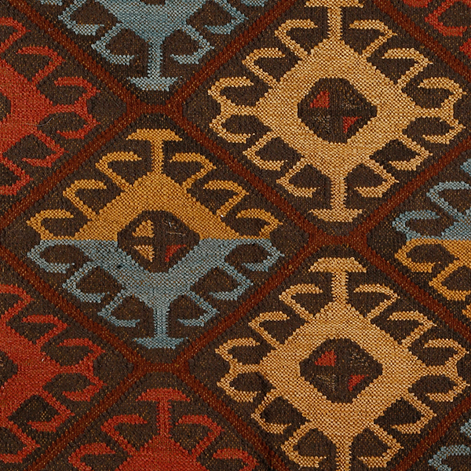

An eminent geographical indication, Panja weave find their home in the state of Haryana.
Panja weaving is a traditional craft from Haryana, India, that is used to make rugs and sweaters from wool or cotton. The name comes from the "Panja", a metallic claw-like tool used to beat the weft threads in the warp. The main equipment used in Panja weaving is a vertical frame loom with two horizontal beams that fit the warp. The warp has two layers that pass through a flat metallic reed that guides the threads.
it is taken through a process of reeling using a 'charkha' (manual spinning wheel). This being a light weight job, it's mostly done by women. The master weaver carries out the process of warp making depending upon the requirement of the design and color combination. He uses the taana (warp) machine for this
